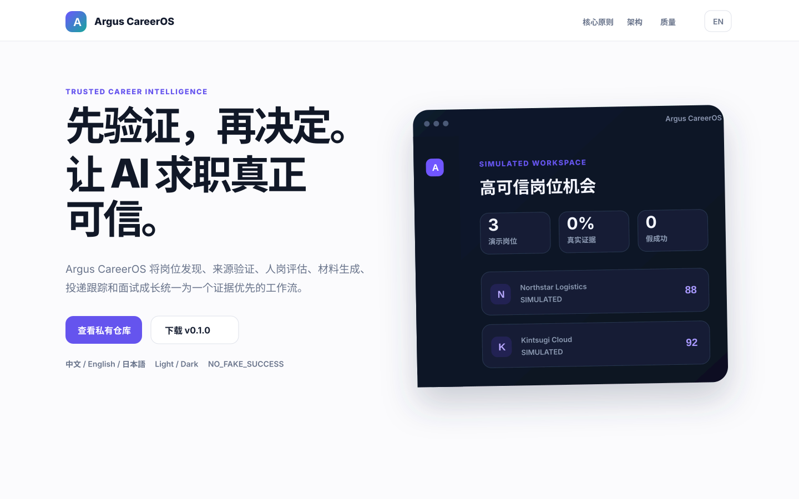
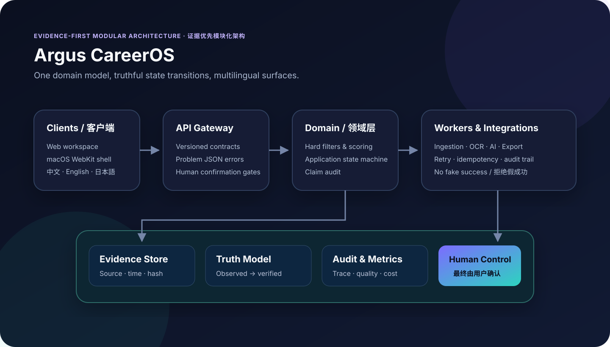

可信 AI · 可验证事实 · 人工控制
先验证，再决定。
让 AI 求职真正可信。
Argus CareerOS 将岗位发现、企业验证、人岗评估、材料生成、真实投递、面试与 Offer 决策整合为一个连续工作流。
Private Beta：下载需要已获授权的 GitHub 账号。

拒绝假成功草稿和模拟动作不会变成真实投递。
SIMULATED ≠ APPLIED3人工维护语言
6事实状态类型
0容许的假成功
1共享领域模型
ONE CONTINUOUS WORKFLOW
从机会到 Offer，不再维护割裂的工具链。
每一个阶段保留来源、事实类型和人工确认点。
TRUTH MODEL
模型可以推断，但不能替用户制造事实。
同一套真实性语义贯穿界面、评分、材料和状态机。
OBSERVED直接观察
来自明确原始来源。
USER_CONFIRMED用户确认
由用户主动确认发生。
INFERRED证据推断
基于证据，仍需复核。
ESTIMATED明确估算
不会伪装成确定事实。
SIMULATED隔离演示
不能驱动真实动作。
UNVERIFIED尚未验证
来源不足时保持未知。
PRODUCT GALLERY
统一设计系统覆盖官网、桌面与移动端。
中英文、深浅主题、响应式布局和语义化状态使用同一视觉语言。
MODULAR ARCHITECTURE
先统一契约、事实和体验，再按真实负载拆分服务。
客户端、版本化 API、共享领域规则、Worker 和证据层边界清晰。

FIRST VERIFIED RELEASE
第一版以可复验的便携 ZIP 交付。
每个 Release 资产由质量门禁生成并附带 SHA-256。
v0.1.0
适用于 macOS、Windows 和 Linux，需要 Node.js 20+。
portable.zip应用、API、启动脚本source.zip发布提交源码website.zip官网静态资源SHA256SUMS完整性校验FAQ
常见问题
为什么强调证据优先？
合理的模型文本不等于真实事实。事实类型决定信息能否进入正式材料或真实投递。
第一版会自动投递吗？
不会。没有确认或外部回执时，系统不会产生 APPLIED 状态。
为什么发布 ZIP？
ZIP 可跨平台且可校验；原生 macOS 公证需要 Developer ID 凭据，项目不会伪造该状态。
从可信基础开始构建智能求职。
查看源码、质量门禁和第一版发布资产。